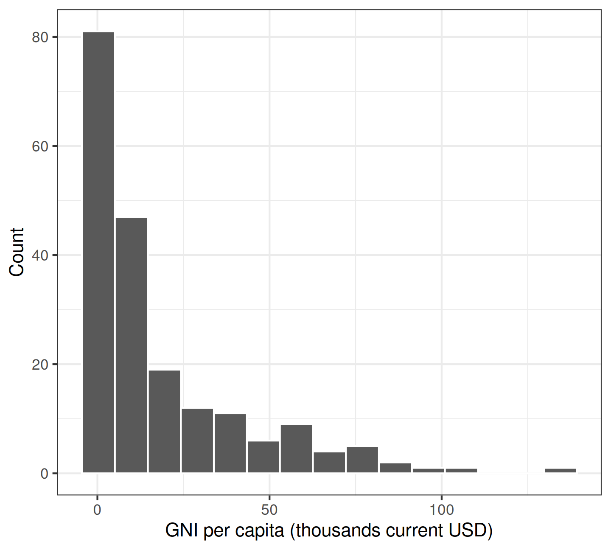
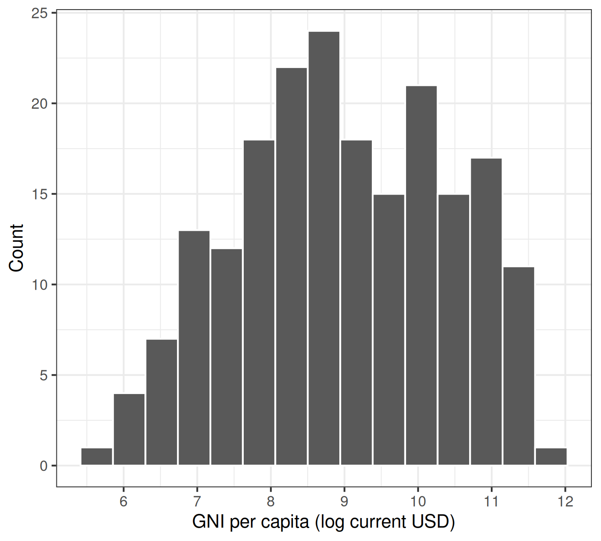
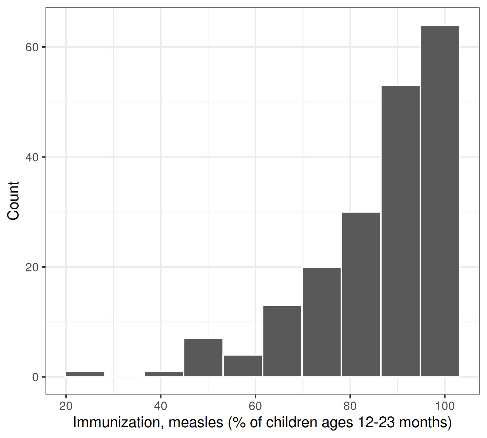
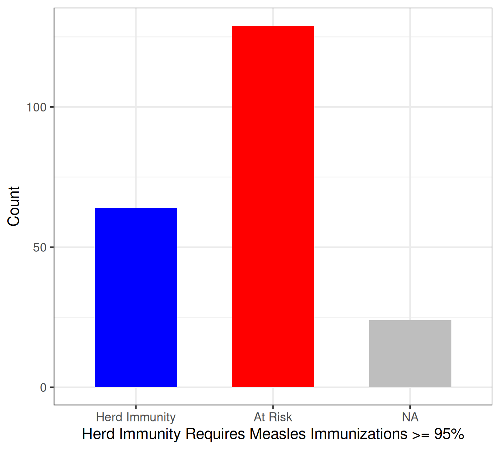
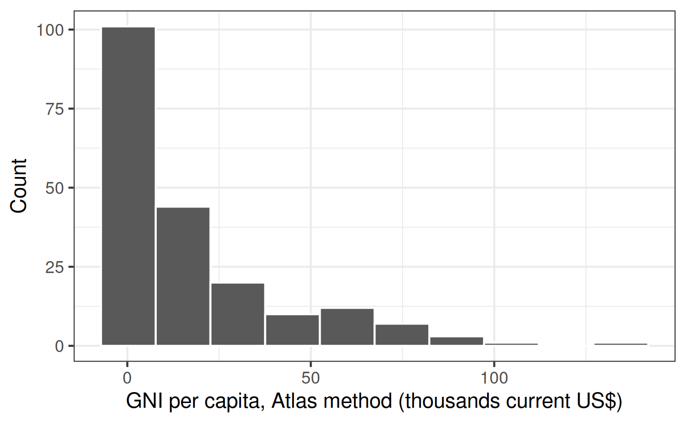
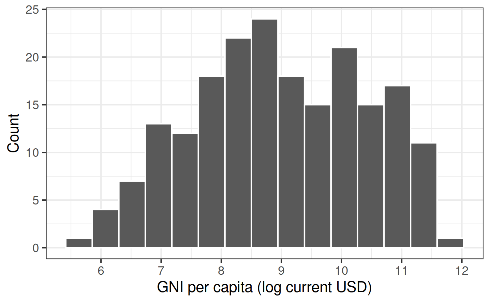
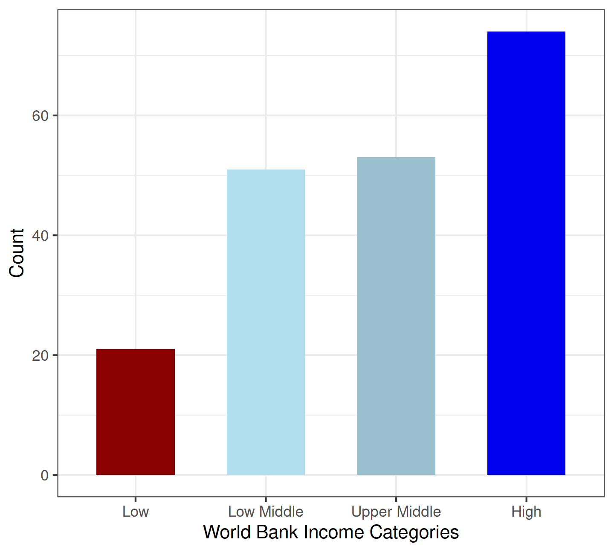

Creating, Transforming and Indexing Variables
Building an index using the American National Election Survey (ANES) data
Create a new R Script: “Building an additive index.R”
Download the data” ANES2020_Data_Extract.RData
Justin Leinaweaver (Spring 2026)
Univariate Analyses
Descriptive statistics (means, medians, modes, counts, SDs, etc)
Visualizations (bar plots, box plots, histograms)
This Week
Modifying variables to help us analyze and present them
GNI per capita, Atlas method (current US$)


Immunization, measles (% of children ages 12-23 months)


GNI per capita using the World Bank categories



Univariate Analyses
Descriptive statistics (means, medians, modes, counts, SDs, etc)
Visualizations (bar plots, box plots, histograms)
This Week
Modifying variables to help us analyze and present them
Creating new variables to better measure our concepts
Why create an additive index of variables?
May create a better estimate of a complex concept
Allows a wider array of analysis tools
May reduce random measurement error
To load the RData file in RStudio:
“Session” → “Load Workspace…” → “ANES2020_Data_Extract.RData”
View(anes)
ANES questions on Americans’ “recent political activities” (within the last 12 months)
Gave money to a candidate (polact.givecand)
Gave money to a political party (polact.giveparty)
Gave money to another political organization (polact.giveoth)
Posted a political yard sign or a bumper sticker (polact.postsign)
Attended a political meeting in person (polact.meetings)
Attended a political meeting online (polact.onlinemeet)
Did other work for a political cause (polact.othwork)
Talked about 2020 vote choice with family or friends (polact.talkvote)
Talked about politics with family or friends (polact.talkpol)
ANES questions on Americans’ “recent political activities” (within the last 12 months)
Gave money to a candidate (polact.givecand)
Gave money to a political party (polact.giveparty)
Gave money to another political organization (polact.giveoth)
Building an Index (using nominal variables)
[1] 2. No 2. No 1. Yes 2. No 2. No 1. Yes 2. No 2. No 2. No 2. No
[11] 2. No 2. No 2. No 2. No 2. No 2. No 2. No 2. No 2. No 2. No
[21] 2. No 2. No 1. Yes 2. No 2. No 2. No 2. No 2. No 1. Yes 2. No
Levels: 1. Yes 2. No [1] 0 0 1 0 0 1 0 0 0 0 0 0 0 0 0 0 0 0 0 0 0 0 1 0 0 0 0 0 1 0 0 0 0 1 0Building an Index (using nominal variables)
ANES questions on Americans’ “racial attitudes”
Have concerned feelings for other racial/ethnic groups (anes$oth.race.concern)
Imagine how they would feel before criticizing other groups (anes$oth.race.feel)
Try to understand the perspective of other racial/ethnic groups (anes$oth.race.persp)
Feel protective of someone due to race or ethnicity (anes$oth.race.protect)
ANES questions on Americans’ “racial attitudes”
| 1. Extremely often | 2. Very often | 3. Somewhat often | 4. Not too often | 5. Not often at all | |
|---|---|---|---|---|---|
| oth.race.concern | 0.15 | 0.30 | 0.35 | 0.14 | 0.07 |
| oth.race.feel | 0.18 | 0.35 | 0.32 | 0.10 | 0.04 |
| oth.race.persp | 0.16 | 0.34 | 0.35 | 0.11 | 0.04 |
| oth.race.protect | 0.23 | 0.38 | 0.29 | 0.07 | 0.03 |
Building an Index (using ordinal variables)
[1] 1. Extremely often 3. Somewhat often 1. Extremely often
[4] 5. Not often at all 1. Extremely often 3. Somewhat often
[7] 3. Somewhat often 5. Not often at all 3. Somewhat often
5 Levels: 1. Extremely often < 2. Very often < ... < 5. Not often at allBuilding an Index (using ordinal variables)
Univariate Analyses
Descriptive statistics (means, medians, modes, counts, SDs, etc)
Visualizations (bar plots, box plots, histograms)
This Week
Modifying variables to help us analyze and present them
Creating new variables to better measure our concepts
Finish the two indicies we started in class today (prompts on Canvas)
Read p824-830 in Miller, Saunders and Farhart (2016)
Review the political knowledge and conspiracy theory questions